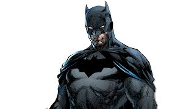
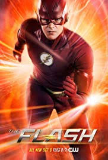
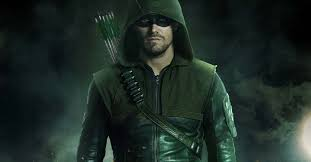
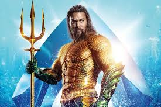
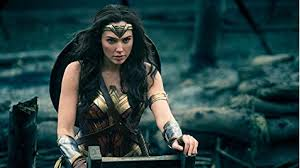
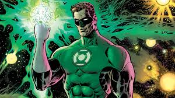

Ever since his inception, Superman has been depicted as a hero that originated from the planet Krypton and was given the name Kal-El at birth. As a baby, he was sent to Earth in a small
spaceship by his biological family, Jor-El and Lara, moments before Krypton was destroyed in a natural cataclysm.

The central fixed event in the Batman stories is the character's origin story. As a little boy, Bruce Wayne is shocked to see his parents, the physician Dr. Thomas Wayne and his wife Martha Wayne,
being murdered by a mugger in front of his very eyes. This drives him to fight crime in Gotham City as Batman.

Barry Allen's origin is that he was struck by a bolt of lightning that connected him with a mysterious source of power he dubbed the “Speed Force.” Originally created by Harry Lampert and
Gardner Fox in Flash Comics #1 in 1940, “The Flash” wasn't Barry Allen when he first appeared.

The Green Arrow as Oliver Jonas Queen, a wealthy socialite who owned Queen Industries in Sky City. In most of the subsequent origin stories,
Queen was abandoned on a deserted island and forced to take up archery in order to survive

Aquaman aka Arthur Curry was the son of Atlanna, an Atlantean princess banished from Atlantis due to her interest in
and frequent visits to the surface world, and Tom Curry, a lighthouse keeper living in Amensty Bay, Maine.

In her debut in All Star Comics #8, Diana was a member of a tribe of women called the Amazons,
native to Paradise Island – a secluded island set in the middle of a vast ocean.

Sinestro was born on the planet Korugar and became Green Lantern of space sector 1417. He was a friend of Abin Sur and mentor to Hal Jordan.
His desire for order was an asset in the Corps, and initially led him to be considered one of the greatest

 Ever since his inception, Superman has been depicted as a hero that originated from the planet Krypton and was given the name Kal-El at birth. As a baby, he was sent to Earth in a small
spaceship by his biological family, Jor-El and Lara, moments before Krypton was destroyed in a natural cataclysm.
Ever since his inception, Superman has been depicted as a hero that originated from the planet Krypton and was given the name Kal-El at birth. As a baby, he was sent to Earth in a small
spaceship by his biological family, Jor-El and Lara, moments before Krypton was destroyed in a natural cataclysm.